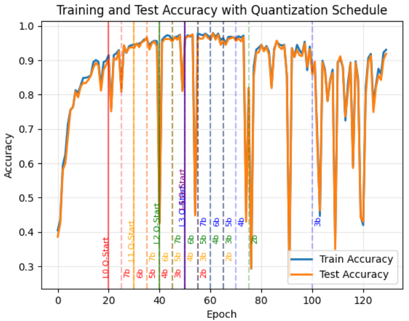
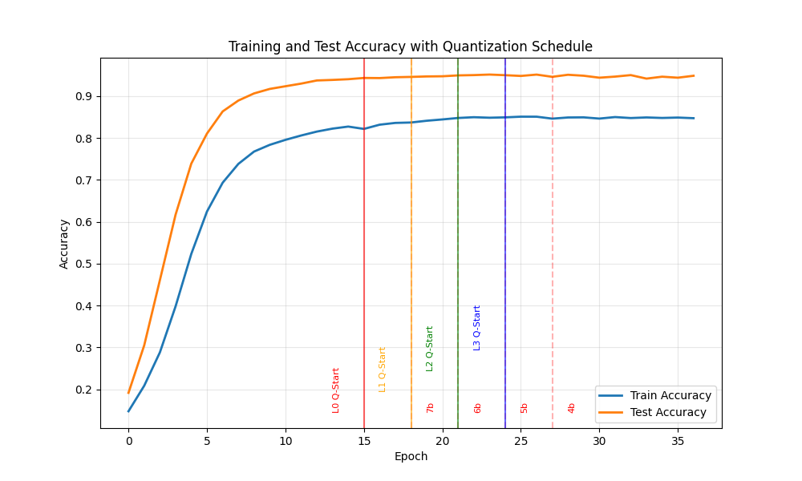

Chapter 5: Neural Network Design
Following preliminary hardware development and functional verification of the pipeline, a compatible PyTorch architecture was established and benchmarked against the MNIST database. Building upon prior testing that confirmed behavioral parity for PyTorch's conv2d and max_pool operations, the classifier was modeled using amax, linear, and argmax functions. The primary challenge in this integration involved a data precision disparity: the target edge device processes binarized inputs and integer weights, whereas PyTorch natively utilizes 32-bit floating-point representations. Consequently, a critical requirement for successful integration was quantizing these values to integers and embedding hardware-in-the-loop constraints directly into the training process to preserve model accuracy.
Weight Quantization
While weight quantization is a mandatory constraint for this edge architecture, its benefits extend equally to fully software-based models. Reducing parameter precision can drastically shrink memory footprint as well as improve bandwidth, as many smaller weights can be packed into one memory entry and fetched in fewer cycles. The goal was to achieve maximum compression of weights to a ternary representation as demonstrated in Scalable MatMul-free Language Modeling [2] not just because of the aforementioned advantages, but due to the simplicity of the hardware mapping. Ternary weights are similar to binary but with an added zero term so that weights can drop out and be pruned if sufficiently small. Because {-1,1} are only being multiplied by {-1,0,1}, the addition simplifies to a bidirectional counter. This required revision of the RTL, to not only encode binary {0,1} to {-1,1}, but also to constrain hardware to the ternary counter logic, rather than default to the typical 2-bit range of [-2:1].
Initial experimentation revealed aggressive quantization from floating point to its final quantized precision would permanently handicap the model. The solution: Unified Progressive Quantization (UPQ) as described in Unifying block-wise PTQ and distillation-based QAT [3]. Each convolution layer is fitted with the quantization function where floating points are scaled to a lower range and then rounded to the nearest integer on forward pass.
Because the derivative of the rounding function is zero almost everywhere, standard backpropagation would effectively halt learning. To bypass this, the architecture employs Straight-Through Estimators (STEs), which approximate the gradient of the quantization function as one. This allows the gradients to pass straight through to the underlying high-precision weights, accumulating subtle, sub-integer updates until they cross into the optimal quantized state.
| Layer | FP | 8b | 7b | 6b | 5b | 4b | 3b | 2b |
|---|---|---|---|---|---|---|---|---|
| 1 | 20 | 5 | 5 | 5 | 5 | 5 | 10 | 20 |
| 2 | 30 | 5 | 5 | 5 | 5 | 5 | 10 | 20 |
| 3 | 40 | 5 | 5 | 5 | 5 | 5 | 10 | 20 |
| 4 | 50 | 5 | 5 | 5 | 5 | 30 | 30 | |
| Classifier | 50 | 10 |

Further testing resulted in the quantization schedule described in Table 5.1, where the precision is gradually stepped down over several epochs. Crucially, once a layer reaches its target minimum precision (e.g., 2-bit), the precision is locked, but the network continues to train for a final set of epochs (a fine-tuning plateau). Coupled with an initially aggressive but gradually reducing learning rate, this plateau allows the weights to actively update and settle into their lowest-precision state, giving downstream layers time to recover from the upstream quantization shock. For the classifier, no further quantization beyond 8-bit was pursued, as precision here is cheaper and most critical. When inspecting the weights at each layer, earlier ternary layers become incredibly sparse and seem to outsource learning to deeper layers. Therefore, great importance should be placed in the penultimate layer, as 3-bit was the minimum quantization the model could recover from as shown in Figure 5.1.
Because the ternary weights and ternary activations are incompatible with each other, this introduces a critical tradeoff: reduced multiply complexity with ternary weights, or reduced datapath complexity with ternary. Although anticlimactic, this decision is made trivial thanks to the lower LUT utilization in DSP convolution layers. When optimizing logic overhead, the primary design constraint, higher precision weights are supported with no additional logical complexity. However, in earlier, thinner layers where timing is more critical, utilizing ternary activations allows for a comfortable precision of 4-bits.
One final weight optimization to more efficiently map to hardware is BatchNorm folding. Batch normalization is critical between neural network layers during training; by ensuring all activations have a mean of zero, and a standard deviation of one which prevents gradients from vanishing or exploding.
This simplifies to a simple scale and bias that can be folded into the already existing parameters. By multiplying the scale into each weight, and adding the offset to each bias before exporting to hardware, the network is stabilized without any costly multiplications or divisions.
Activation Quantization
While weight quantization inherently benefits any AI deployment by compressing static memory, activation quantization serves as a strict information bottleneck. By deliberately restricting the precision of intermediate feature maps, the architecture forces the network to learn robust, low-bit representations, transferring just enough meaning to sustain accuracy. On hardware, this bottleneck is what physically enables deep inference, shrinking the required datapath width and minimizing the BRAM required for temporal buffering.
After training many different architectures, none were able to surpass 50% accuracy with a full ternary datapath. While the bounded nature of ternary activations is highly beneficial for hardware, strictly limiting datapath width and making worst-case accumulator overflows highly unlikely, this flat gated function causes gradients to vanish before they can propagate back to the network's early layers. ReLU, on the other hand, is positively unbounded. By applying a constant derivative of one to positive inputs, it acts as a lossless highway, ensuring that even the earliest layers receive strong error signals to learn from.

It's clear that an output activation with a bit-width greater than 2-bits should function similarly to a clipped ReLU, however it's not immediately obvious which bits to select off of the sum, which in the worst case accumulate far beyond the target output width. If sufficiently smaller than the accumulation width, selecting off the LSB results in noise, while selecting off of the MSB results in zeros. Choi, J et al. bridges this gap in PACT: Parameterized Clipping Activation for Quantized Neural Networks [4] where a window with a lower bound of zero, and an upper bound. Everything below is zeroed, and everything above saturates to this bound. By forcing the network to learn a bound that is a power of two, the quantization scale factor can be mathematically mapped to a hardware right-shift. This allows the network to autonomously learn and select the most meaningful 'sweet spot' range of bits directly from the accumulator, resulting in the accuracy shown in Figure 5.2.
In hardware, this translates to a single static shift parameter per layer to apply the learned scale, naturally enforcing the clipping boundary via the physical limitations of the output bit-width. While learning a custom scale per channel may yield a slight increase in accuracy, because DSPs operate over a range of out channels, dynamically shifting the output would incur massive control logic overhead. Post training, the network then observes the learned weights and produces a data-dependent worst case accumulation bound. The hardware which sets the register bitwidth to the absolute worst case is trimmed to this new width to reduce FF and LUT overhead.